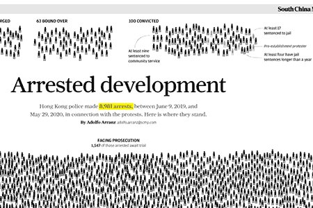

Gráficos figurativos
COVID-19 Vaccination tracker
Publicado en Reuters Graphics.

Arrested development
Publicado en South China Morning Post.
The slave trade
Publicado en SCMP.

Himalayan showdown
Publicado en SCMP.
Gráficos no figurativos

Europe’s COVID-19 divide
Publicado en Reuters Graphics.
A big deal
Publicado en SCMP.
Big drop in US visas for mainland Chinese students
Publicado enSCMP.
COVID-19 Vaccination tracker
Publicado en Reuters Graphics.